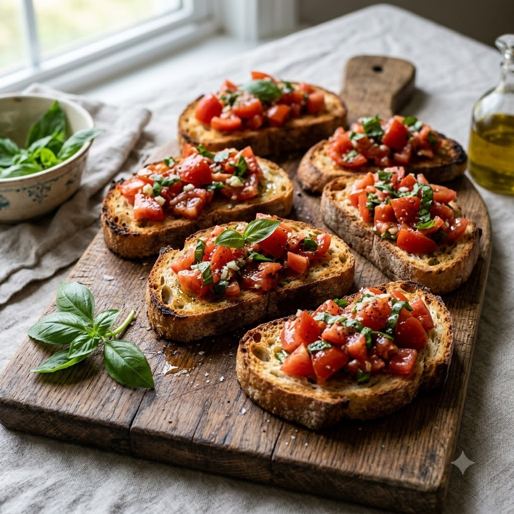

Bruschetta with Airfryer-Toasted Bread

Bruschetta with Airfryer-Toasted Bread
Airfryer – Bake 190°C 5 min — Serves 4
Vegetarian • Everyday • Italian
🔥 Airfryer🍽 Serves 4
Ingredients
- 8 slices baguette or crusty bread
- 2 tbsp olive oil, divided
- 3 tomatoes, finely diced
- 2 cloves garlic, 1 minced + 1 whole for rubbing
- 1/4 cup chopped fresh basil
- Salt & pepper to taste
- 1 tsp balsamic vinegar (optional)
Method
1Preheat: Preheat the Airfryer to 190°C for 4 minutes before adding the food to the basket.
2Brush bread slices with olive oil and arrange in the basket.
3Bake at 190°C for 5 minutes until golden and crisp; rub each slice with the whole garlic clove while warm.
4Mix diced tomatoes, minced garlic, basil, remaining olive oil, salt, pepper and balsamic vinegar.
5Spoon the tomato mixture over the toasted bread just before serving.